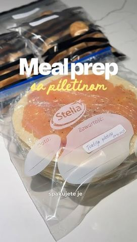

Pileće ćuftice

Moja beleška
SačuvanoZnate one trenutke kad poželite da nekome olakšate dan — bilo sebi, bilo nekome dragom? 😍 Ovog puta ja sam htela da iznenadim svoju snajku, koja je u devetom mesecu trudnoće. Dok je bila na pregledima (i dok je kod mene u kući haos zbog renoviranja kuhinje 🙈), iskoristila sam vreme da joj pripremim nešto što će joj, sigurna sam, baš značiti kada se vrati iz porodilišta. Napravila sam meal prep sa piletinom – dva provereno dobra recepta: Pileće ćuftice
Sastojci
- Za ovu količinu koristila sam
Priprema
Luk sitno iseckati i kratko prodinstati da pusti sok. Hleb usitniti i potopiti u mleko, pa sve pomešati – piletinu, luk, hleb sa mlekom, parmezan, puter, so i biber – i dobro sjediniti. Oblikovati kuglice, zatim ih staviti u zamrzivač na 15 minuta da se malo stegnu, pa ih spakovati u zip kesice. Od ove količine dobila sam 28 sočnih ćuftica, savršenih za zamrzivač i za brzi ručak kad zatreba. 🌯 Pileće tortilje Za njih sam koristila 1 kg samlevene piletine, malo soli i bibera – i, naravno, tortilje. Na svaku manju tortilju sam u tankom sloju premazala piletinu, posolila, pobiberila po ukusu, uvila u providnu foliju i spakovala u zip kesice. Ispalo mi je 10 pilećih tortilja – praktične, ukusne i spremne za zamrzivač. Kad ih izvadite, ne treba čak ni da čekate da se odlede – samo ih stavite na tiganj i pecite na slabijoj temperaturi, prvo sa strane gde je piletina. Kad se ona ispeče, okrenite da se i druga strana malo zapeče i postane hrskava. Dodajte po ukusu sireve, paradajz, neki sos – šta god volite – i dobićete preukusne, sočne tortilje. Ja sam se baš oduševila! 😍 Moj spisak ideja za pripremu unapred je poduži, i plan mi je, ako mi vreme dozvoli, da što više toga spremim pre nego što nam stigne nova beba u porodicu. ❤️ Ali želim da čujem i vaše – koji su vaši provereni recepti koje pripremate unapred, zamrznete i kasnije imate brz ručak ili večeru? 👇
Originalni opis sa Instagrama
Znate one trenutke kad poželite da nekome olakšate dan — bilo sebi, bilo nekome dragom? 😍 Ovog puta ja sam htela da iznenadim svoju snajku, koja je u devetom mesecu trudnoće. Dok je bila na pregledima (i dok je kod mene u kući haos zbog renoviranja kuhinje 🙈), iskoristila sam vreme da joj pripremim nešto što će joj, sigurna sam, baš značiti kada se vrati iz porodilišta. Napravila sam meal prep sa piletinom – dva provereno dobra recepta: Pileće ćuftice Za ovu količinu koristila sam: • 1 kg pilećeg filea • 2 srednje glavice crnog luka • 200 ml mleka • 5 kriški hleba • 130 g parmezana (ili prezli, dodavati postepeno) • 1 i po kašika putera (ili ulja) • so i biber po ukusu Luk sitno iseckati i kratko prodinstati da pusti sok. Hleb usitniti i potopiti u mleko, pa sve pomešati – piletinu, luk, hleb sa mlekom, parmezan, puter, so i biber – i dobro sjediniti. Oblikovati kuglice, zatim ih staviti u zamrzivač na 15 minuta da se malo stegnu, pa ih spakovati u zip kesice. Od ove količine dobila sam 28 sočnih ćuftica, savršenih za zamrzivač i za brzi ručak kad zatreba. 🌯 Pileće tortilje Za njih sam koristila 1 kg samlevene piletine, malo soli i bibera – i, naravno, tortilje. Na svaku manju tortilju sam u tankom sloju premazala piletinu, posolila, pobiberila po ukusu, uvila u providnu foliju i spakovala u zip kesice. Ispalo mi je 10 pilećih tortilja – praktične, ukusne i spremne za zamrzivač. Kad ih izvadite, ne treba čak ni da čekate da se odlede – samo ih stavite na tiganj i pecite na slabijoj temperaturi, prvo sa strane gde je piletina. Kad se ona ispeče, okrenite da se i druga strana malo zapeče i postane hrskava. Dodajte po ukusu sireve, paradajz, neki sos – šta god volite – i dobićete preukusne, sočne tortilje. Ja sam se baš oduševila! 😍 Moj spisak ideja za pripremu unapred je poduži, i plan mi je, ako mi vreme dozvoli, da što više toga spremim pre nego što nam stigne nova beba u porodicu. ❤️ Ali želim da čujem i vaše – koji su vaši provereni recepti koje pripremate unapred, zamrznete i kasnije imate brz ručak ili večeru? 👇